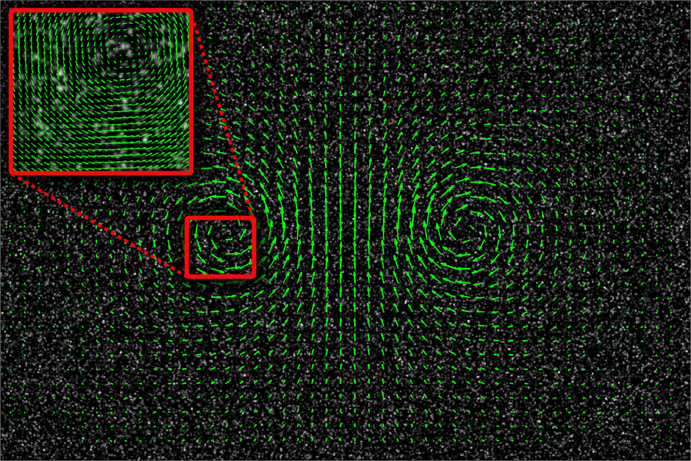
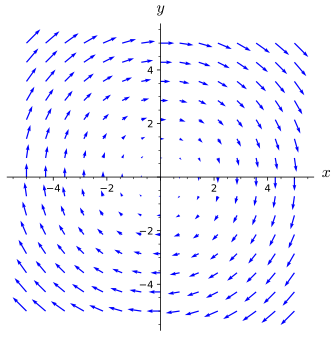

What are some familiar contexts in which vector fields arise?
How do we draw a vector field?
How do gradients of functions with partial derivatives connect to vector fields?
Vectors have played a central role in our study of multivariable calculus. We know how to do operations on vectors (addition, scalar multiplication, dot product, etc.), and we have seen how vectors can be used to describe curves in \(\R^2\) and \(\R^3\text{.}\) The examples of using vectors to describe curves was our first example of a vector-valued function. In Definition 9.6.2 a curve is traced by the terminal point of \(\vr(t)\text{,}\) a function that has a real number as an input and produces a vector in \(\R^2\) or \(\R^3\text{.}\) In this section, we will expand our understanding of vector-valued functions to take a point \((x,y)\) in \(\R^2\) (or a point \((x,y,z)\) in \(\R^3\)) as an input and produce a vector (typically in \(\R^2\) or \(\R^3\text{,}\) respectively) as output.
Preview Activity12.1.1.
It’s common when discussing weather to talk about the wind speed, but as any student who has gotten this far in the text will know, this nomenclature is imprecise. It’s not terribly helpful to tell someone the wind is blowing at 10 km⁄h without telling them the direction in which the wind is blowing. If you’re trying to make a decision based on what the wind is doing, you need to know about the direction as well. For instance, if you are taking off in a hot air balloon, the wind direction will determine which direction the chase team should start going to keep track of you. Because of the swirling nature of wind, it makes sense to give the wind velocity at each point in a region (two-dimensional or three-dimensional).
(a)
Suppose that given a point \((x,y)\) in the plane, you know that the wind velocity at that point is given by the vector \(\langle y,x\rangle\text{.}\) For example, we’d then know that at the point \((1,-1)\text{,}\) the wind velocity is \(\langle -1,1\rangle\text{.}\) We will give the wind velocity as a function \(\vF\text{,}\)where \(\vF(x,y) = \langle y,x\rangle\text{.}\) In the table below, fill in the wind velocity vectors for the given points.
The vector field \(\vF(x,y)\) takes the coordinates of the point \((x,y)\) and reverses them to make the components of the vector. Thus, \(\vF(2,1) = \langle 1,2\rangle\text{.}\) The remaining vectors are shown in the table below.
\((x,y)\)
\((2,1)\)
\((0,0)\)
\((-1,2)\)
\((3,-1)\)
\((-2,-1)\)
\(\vF(x,y)\)
\(\langle 1,2\rangle\)
\(\langle 0,0\rangle\)
\(\langle 2,-1\rangle\)
\(\langle -1,3\rangle\)
\(\langle -1,-2\rangle\)
(b)
Suppose that we associate the vector \(\vG(x,y) = -x\vj\) to a point \((x,y)\) in the plane. Complete the table below by giving the vector associated to each of the given points.
Note that another way of writing \(\vG(x,y)\) is \(\langle 0 -x\rangle\text{.}\) Thus, \(\vG(2,3) = \langle 0,-2\rangle\text{,}\) for example. The remaining answers are found in the table below.
\((x,y)\)
\((-2,0)\)
\((-1,2)\)
\((0,-2)\)
\((2,3)\)
\((3,2)\)
\((-1,0)\)
\((1,3)\)
\(\vG(x,y)\)
\(\langle 0,2\rangle\)
\(\langle 0,1\rangle\)
\(\langle 0,0\rangle\)
\(\langle 0,-2\rangle\)
\(\langle 0,-3\rangle\)
\(\langle 0,1\rangle\)
\(\langle 0,-1\rangle\)
(c)
A table of values of these vector-valued functions is useful to understand the input vs. output nature of a vector field as a function, but perhaps even better is a method of visualizing the vector outputs. A good picture is worth a thousand words (or numbers). Returning to our analogy of the output vector for our vector field being wind velocity, if \(\vF(2,1) = \langle 1,2\rangle\text{,}\) this means that at the location \((1,2)\) the wind is moving in the direction given by \(\langle 1,2\rangle\text{.}\) Thus, we draw the output vector \(\langle 1,2\rangle\) with its initial point at \((2,1)\text{.}\)
Using the first set of axes in Figure 12.1.1, plot the vectors \(\vF(x,y)\) for the five points in the table in part a. The example \(\vF(1,-1) = \langle -1,1\rangle\) is drawn for you.
As Preview Activity 12.1.1 showed, a velocity vector field is an example of a scenario where associating a vector to each point in a region is useful. We denote such a vector field by \(\vF(x,y)\) or \(\vF(x,y,z)\text{,}\) where the vector associated to the point \((x,y)\) or \((x,y,z)\) is the velocity of something at that point. Wind velocity is one example, but another example would be the velocity of a flowing fluid. Figure 12.1.2 shows such a velocity vector field. Technically, it only shows some of the vectors in the vector field, since the figure would be unintelligible if all of the vectors were shown. This is illustrated by the inset in the upper left corner, which gives a better picture of what we would see if we zoomed in on the red square of the main figure.

Figure12.1.2.An illustration of some of the vectors in a fluid velocity vector field. "PIVlab multipass" by Willa‚Äâ1‚Äâ Licensed under CC-BY-SA 3.0 via Wikimedia Commons.
Force fields, such as those created by gravity, are also examples of vector fields. For example, the earth exerts a gravitational force on objects which is directed from the center of the object to the center of the earth. The magnitude of the force vector is determined by the distance between the object and the earth (by an reciprocal squared relationship.) An illustration of this vector field can be seen in Figure 12.1.3, where the earth is positioned at the origin, but not shown. Notice that the vectors get shorter as the distance from the origin increases, reflecting the fact that the gravitational force is weaker at larger distances from the origin (Earth).
Figure12.1.3.Gravitational vector field.
Subsection12.1.2Mathematical Vector Fields
As suggested in the introduction and Preview Activity 12.1.1, vector fields can be specified using the notation of functions and vectors.
Definition12.1.4.
A vector field in \(2\)-space is function whose value at a point \((x,y)\) is a \(2\)-dimensional vector \(\vF(x,y)\text{.}\) Similarly, in \(3\)-space, a vector field is a function \(\vF(x,y,z)\) whose value at the point \((x,y,z)\) is a \(3\)-dimensional vector.
Since \(\vF(x,y,z)\) is a vector, it has \(\vi\text{,}\)\(\vj\text{,}\) and \(\vk\) components. Each of these components is a scalar function of the point \((x,y,z)\text{,}\) and so we will often write
For example, if \(\vF(x,y,z) = \langle x^2,xy\sin(z),y^3\rangle\text{,}\) then the component functions of \(\vF\) would be \(F_1(x,y,z) = x^2\text{,}\)\(F_2(x,y,z) = xy\sin(z)\text{,}\) and \(F_3(x,y,z) = y^3\text{.}\) Any time we are considering a vector field \(\vF(x,y,z)\text{,}\) the definitions of functions \(F_1\text{,}\)\(F_2\text{,}\) and \(F_3\) should be inferred in this manner. (For a vector field \(\vF(x,y)\) in \(2\)-space, we only have the functions \(F_1\) and \(F_2\text{,}\) which are defined analogously.)
Subsection12.1.3Plotting Vector Fields
Preview Activity 12.1.1 gave you a chance to plot some vectors in the vector fields \(\vF(x,y) = \langle y,x\rangle\) and \(\vG(x,y) = \langle 0,-x\rangle\text{.}\) It would be impossible to sketch all of the vectors in these vector fields, since there is one for every point in the plane. In fact, even sketching many more of the vectors than you were asked to in the preview activity rapidly becomes tedious. Fortunately, computers can do a great job of making such sketches. One thing to keep in mind, however, is that the magnitudes of the vectors in computer plots are typically scaled, including plots of vector fields we will encounter later in this text. To illustrate this, consider the two plots of the vector field \(\vF(x,y) = y\vi + x\vj\) in Figure 12.1.5.
Figure12.1.5.Two plots of \(\vF(x,y) = y\vi + x\vj\) from Sage
The left plot shows some of the vectors and accurately depicts all of their magnitudes, making the figure very hard to understand, especially along the lines \(y=x\) and \(y=-x\text{.}\) The plot on the right, however, uses a uniform rescaling to make the figure easier to read. As before, each vector’s direction is completely accurate, but now the magnitudes are much smaller. However, the relative magnitudes are preserved, helping us to see that vectors farther from the origin have larger magnitude than those closer to the origin.
Activity12.1.2.
The plot in Figure 12.1.6 illustrates the vector field \(\vF(x,y) = y\vi -x\vj\text{.}\)

Figure12.1.6.The vector field \(y\vi-x\vj\)
(a)
Starting with one of the vectors near the point \((2,0)\text{,}\) sketch a curve that follows the direction of the vector field \(\vF\text{.}\) To help visualize what you are doing, it may be useful to think of the vector field as the velocity vector field for some flowing water and that you are imagining tracing the path that a tiny particle inserted into the water would follow as the water moves it around.
We find that \(\nabla f(x,y) = \langle 2x,2y \rangle\text{.}\) Thus, \(xi + yj = \frac{1}{2}\nabla f(x,y)\) meaning the vector field is multiple of the gradient of the function \(f\text{.}\)
(f)
Write a sentence describing the geometric relationship between \(\vF(x,y)\) and a circle centered at the origin. What is the relationship between \(\vecmag{\vF(x,y)}\) and the radius of that circle?
We know that the circle \(x^2+y^2 = r^2\) is a level curve of the function \(f(x,y)=x^2+y^2\text{,}\) and hence \(\nabla f\) is orthogonal to that circle. Since \(\vF(x,y)\) is orthogonal to (a multiple of) the gradient of \(f\text{,}\) we know that \(\vF(x,y)\) is tangent to the circle. Noticing that \(\vecmag{\vF(x,y)} = \sqrt{x^2+y^2}\text{,}\) we see that the magnitude of \(\vF(x,y)\) is equal to the radius of the circle to which it is tangent.
In the previous activity, we looked a special type of curve in a vector field, namely the curve that flows with the output of the vector field. Geometrically, the output vectors of the vector field will be tangent to the flow curves. These flow curves come up in several physical situations, including as solution curves to a system of differential equations. We will not discuss these applications here but you should should look out for uses of vector fields in the next few math courses.
Subsection12.1.4Gradient Vector Fields
Without using the terminology, we’ve actually already encountered one very important family of vector fields a number of times. Given a function \(f\) of two or three variables, the gradient of \(f\) is a vector field, since for any point where \(f\) has first-order partial derivatives, \(\grad{f}\) assigns a vector to that point (look at Subsection 10.6.3 for a review).
Activity12.1.3.
(a)
In Figure 12.1.7 there are three sets of axes showing level curves for functions \(f\text{,}\)\(g\text{,}\) and \(h\text{,}\) respectively. Sketch at least six vectors in the gradient vector field for each function. In making your sketches, you don’t have to worry about getting vector magnitudes precise, but you should ensure that the relative magnitudes (and directions) are correct for each function independently.
The gradients need to be perpendicular to the curve at the points you choose.
(b)
Verify that \(\vF(x,y) = \langle 6xy,3x^2+9\sqrt{y}\rangle\) is a gradient vector field by finding a function \(f\) such that \(\nabla f(x,y) = \vF(x,y)\text{.}\) For reasons originating in physics, such a function \(f\) is called a potential function for the vector field \(\vF\text{.}\)
We need to find antiderivatives of the appropriate components with respect to \(x\) and \(y\text{.}\) For the first component with respect to \(x\text{,}\) we find \(3x^{2}y + g(y)\text{.}\) For the second component with respect to \(y\text{,}\) we have \(3x^{2}y + 6{y}^{3/2} + h(x)\text{.}\) Notice here that we may take \(g(y) = 6y^{3/2}\) and \(h(x)=0\) (or any constant). Thus, we have \(f(x,y) = 3x^{2}y + 6y^{3/2}\text{.}\)
(c)
Is the function \(f\) found in part b unique? That is, can you find another function \(g\) such that \(\nabla g(x,y)= \vF(x,y)\) but \(f\neq g\text{?}\)
We will consider that \(\vF(x,y) = \langle f_{x},\ f_{y} \rangle\text{.}\) So \(f_{x} = 6xy\text{,}\) then \(f_{xy} = 6x\text{.}\) And if \(f_{y} = 2x + 9y^{1/2}\) then \(f_{yx} = 2\text{.}\) Therefore, this is not a gradient vector field, which would require that \(f_{xy} = f_{yx}\text{.}\)
Subsection12.1.5Summary
A \(2\)-dimensional vector field is a function defined on part of \(\R^2\) whose value is a \(2\)-dimensional vector. A \(3\)-dimensional vector field is a function defined on part of \(\R^3\) whose value is a \(3\)-dimensional vector.
A vector field is typically described in terms of its multivariable component functions, \(\vF(x,y)=\langle f(x,y),g(x,y)\rangle= f(x,y) \vi +g(x,y)\vj\) or in 3D
Vector fields arise in familiar contexts such as wind velocity, fluid velocity, and gravitational force.
Vector fields are generally plotted in ways that ensure the direction and relative magnitudes of the vectors sketched are correct instead of ensuring that each vector’s magnitude is depicted correctly.
The gradient of a function \(f\) of two or three variables is a vector field defined wherever \(f\) has partial derivatives.
Exercises12.1.6Exercises
1.
Compute and sketch the vector assigned to the points \(P = (0,8,-8)\) and \(Q = (2,1,0)\) by the vector field \(\mathbf{F} =\left\lt xy,z^2,x\right>\text{.}\)
Assume that \(x,y \geq 0\) for all of the vector fields in this question. Select an answer for each question and explain your reasoning.
(a)
Let \(\vF_1= y \vec{i}\text{.}\)
The vector field \(\vF_1\) is
parallel to the x-axis
parallel to the y-axis
neither
As \(x\) increases,
the length of the vector field increases
the length of the vector field decreases
neither
As \(y\) increases,
the length of the vector field increases
the length of the vector field decreases
neither
(b)
Let \(\vF_2= \langle y, 1 \rangle\text{.}\)
The vector field \(\vF_2\) is
parallel to the x-axis
parallel to the y-axis
neither
As \(x\) increases,
the length of the vector field increases
the length of the vector field decreases
neither
As \(y\) increases,
the length of the vector field increases
the length of the vector field decreases
neither
(c)
Let \(\vF_3= (x+e^{1-y})\vec{j}\text{.}\)
The vector field \(\vF_3\) is
parallel to the x-axis
parallel to the y-axis
neither
As \(x\) increases,
the length of the vector field increases
the length of the vector field decreases
neither
As \(y\) increases,
the length of the vector field increases
the length of the vector field decreases
neither
(d)
Let \(\vF_4= grad(y^4+e^{2x})\text{.}\)
The vector field \(\vF_4\) is
parallel to the x-axis
parallel to the y-axis
neither
As \(x\) increases,
the length of the vector field increases
the length of the vector field decreases
neither
As \(y\) increases,
the length of the vector field increases
the length of the vector field decreases
neither
Subsection12.1.7Notes to the Instructor
This section uses tools from the chapter on multivariable functions and thier derivatives, with specific references to gradients. Additionally, vector calculations and geometry are used throughout to understand the output of the vector field.